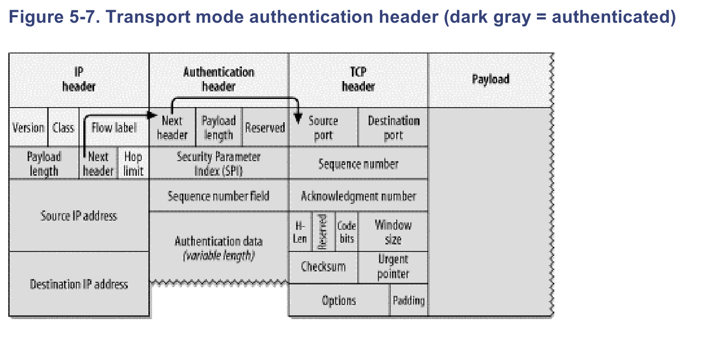
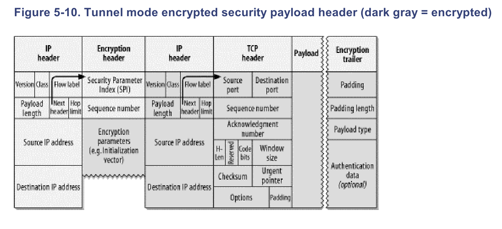
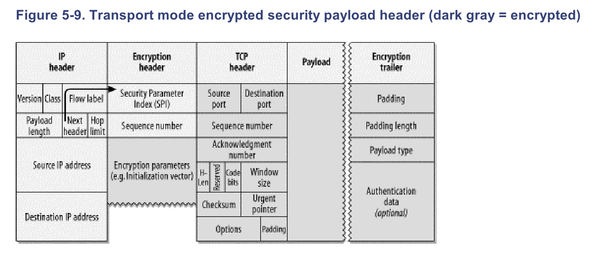

Curso IPv6
Seguridad en IPv6
Contenido del tema
- IPSec
- Problemas sin resolver
IPSec
- Es un conjunto de protocolos cuya misión es asegurar comunicaciones IP
- Parte de los mecanismos IPSec son obligatorios en IPv6
- Es opcional en IPv4
Nuevos mecanismos de seguridad de serie en el protocolo
- Modo Túnel
- Modo Transporte
Elementos requeridos
- SPD: Security Policy Database (Base de datos de políticas de seguridad)
- SAD: Security Association Database (Base de datos de asociaciones de seguridad)
Autenticación
- Se utiliza la extensión de la cabecera 51
- Mantiene información de la secuencia de datos y del resto de contenidos
- Se utiliza un secreto predefinido como salt
- Hay dos algoritmos incluidos en la especificación:
Campos autenticados en el modo transporte
- La propia cabecera de autenticación
- Las cabeceras posteriores
- El contenido (payload)
- En la cabecera principal
- Payload length
- Next Header
- Source
- Destination
Campos autenticados en modo transporte

Campos autenticados en modo túnel

Encriptación
- Se utiliza la extensión de cabecera 50
- El único algoritmo en la especificación es DES-CBC
- La cabecera de encriptación no incluye un campo para siguiente cabecera. Algunos campos están incluidos en un "trailer" después del payload
Campos encriptados en modo transporte

Campos encriptados en modo túnel
Gestión de claves
- Habitualmente se ejecuta como demonio
- Crea asociaciones de seguridad y distribuye claves
- Primero debe crear una comunicación segura con el cliente, para luego distribuir la clave
- Hubo una revisión del protocolo en 2005
Problemas de seguridad sin resolver en IPV6
- Seguridad dentro del túnel
- Encriptación y autenticado con NAT
- QoS y el descarte de paquetes
- IP Móviles